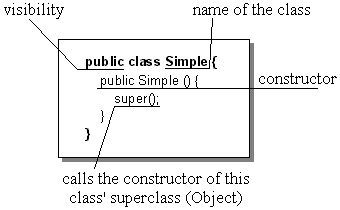
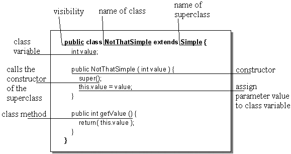

Java = new ProgrammingLanguage()
Java = new ProgrammingLanguage() bottom of page
bottom of page
| Java = new ProgrammingLanguage() |
bottom of page |
Using the classes in your own programs |
| jump directly to |
If you want to get more information about Java, I strongly recommend you to take a closer look on The Java Tutorial, written by Mary Campione and Kathy Walrath. It explains each feature of the Java language in detail, is structured very well, and had been written in an easy-to-read way.
 top of page top of page |
Object class, located in the java.lang package.
It is a class with very general behaviour and all other classes inherit and extend this behaviour.
Now it will be shown, what a class looks like, by defining a simple class:

This simple class has a "header" that consists of the visibility (indicates, from where this class may be instantiated),
the word class and a name for this class.
The "body" of this class only has a constructor that is used, when this class is instantiated.
Each statement inside the constructor will be executed and usually contains statements that initialize variables or call methods.
The statement super() (always called implicitely) simply calls the constructor of this class' superclass.
Because the Simple class is not explicitely derived from any other class by adding extends [name of superclass],
Java automatically declares the Object class to be the superclass.
If you are a C++ programmer, you are probably looking for a destructor. You won't find one, because, as mentioned in the previous section,
Java automatically handles the dereferencing of objects with its garbage collection.
For this simple class is pretty useless, let's extend it to a not that simple class:

As you can see, this class is derived from the Simple class by adding extends Simple after the class name.
Thus, our new class inherits all the functionality and behaviour of the Simple class, as well as of the Object class.
This class now has one class variable (or member variable) value and a method getValue(), which returns the variables' value.
The constructor has now something more to do:
First, the superclass constructor is called by super() (which calls its own superclass constructor; that's inheritance!)
and then assigns the parameter value to the class variable value.
For the names of the parameter and the class variable are the same, the prefix this. must be added to the variable's name
to indicate that it belongs to a variable of this class.
The method getValue() is also given a visibility, which indicates from where this method may be invoked.
Giving the method a public visibility means that this method may be called from any other class.
The possible visibilities of a method, regarding to same class, subclass, package, and world are:
Now we want to use this class and thus have to create an object.
| top of page |
new operator.
NotThatSimple class, we would have to write:
NotThatSimple notThatSimpleObject = new NotThatSimple( 42 );
This statement creates a new NotThatSimple object and performs the following three actions:
Declaration
NotThatSimple notThatSimpleObject;
This statement only creates a variable named notThatSimpleObject to hold an object of type NotThatSimple,
but does not instantiate it.
As it is common use in Java (and the Style Guide fanatic I am), I will use names that begin with an uppercase letter for class names and a lowercase letter for object names.
Instantiation
new operator, followed by a class constructor call.
new NotThatSimple( 42 );
The new operator creates an object and returns a reference to that object:
notThatSimpleObject = new NotThatSimple( 42 );
Note that before you can write the object instantiation in this form, you must have declared notThatSimpleObject
to be of type NotThatSimple earlier.
Otherwise, you'll get an exception (error), every Java programmer is familiar with: the NullPointerException.
Initialization
new operator:
NotThatSimple( 42 );
Each class has at least one constructor, which can easily be distinguished from a method, because it has
the same name as the class and has no return type.
Our NotThatSimple class has only one constructor that takes one integer as an argument (the number "42" in the example).
[see CW96, "Creating Objects"]
Now we have got our object notThatSimpleObject we can work with.
As mentioned in the previous chapter, an object has state, behaviour, and identity.
The state of our object is determined by the current value of the variable value.
To make clear that a variable belongs to an object (instance of a class), it is explicitely called instance variable.
The object's behaviour is determined by the methods it (or any of its superclasses) can perform.
Our object has only one method getValue(), which may be used to get the object's current state.
And finally, our object also has an identity, determined by the object's name.
As we heard before, a class serves as a "blueprint" for similar objects.
This means, we are free to create as many objects of the NotThatSimple type as we want.
For example, the statement
NotThatSimple similarObject = new NotThatSimple( 27 );
creates another object that is similar to the notThatSimpleObject.
It has the same behaviour, because it is also of the NotThatSimple type, but its state and identity are different.
Now, if we want to change the state of an object, we have to call its methods.
| top of page |
notThatSimpleObject.getValue();
To specify, which object's method you want to call, the name of that object must be written.
After the object's name, the name of the method follows.
To call the same method, but now for similarObject, you would have to write:
similarObject.getValue();
(Do you remember the term reusability, mentioned in the "Object Orientation" section?)
Our example class offers no way to change our objects' states, but we may get some information about the states.
The getValue() method returns an integer value, which represents an object's current state.
Thus, if you want to get the state of similarObject, you might write something like:
int currentState;
currentState = similarObject.getValue();
Of course, the variable that receives the return value must be of the same type as the returned value.
After this short description of some Java basics, let's go on to the serious stuff.
The next section shows you, how to work with the neural network classes.
| Java = new ProgrammingLanguage() |
top of page |
Using the classes in your own programs |
| navigation |
|
[main page]
[content]
[neural net overview] [class structure] [using the classes] [sample applet] [glossary] [literature] [about the author] [what do you think ?] |
 The look of a class
The look of a class